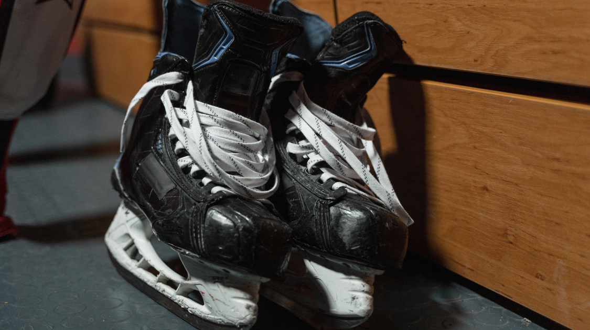

Sports & Entertainment
Rutherford Breathes New Life Into the Canucks' Front Office
By Keyaan Vegdani | Published Jan 30, 2022 9:16 p.m. PST

Once the Aquillini family instated Jim Rutherford as the President of Hockey Operations for the Vancouver Canucks, it was only a matter of time until a new General Manager was found. A grueling round of interviews came to an end on Wednesday, weeks after both Travis Green and Jim Benning were fired.
Following his connection with his previous role with the Pittsburgh Penguins, Rutherford chose Patrik Allvin. The three-time Stanley Cup Champion spent 16 years as a member of the Penguins’ front office, where he held the position of director of amateur scouting before being promoted to Assistant General Manager in November 2020.
Although the hire is promising, the team Rutherford is assembling around the 47-year-old is displaying his commitment to creating a diverse workspace. Émilie Castonguay, a former agent for players such as Alex Lafrenière, was given the role of Assistant General Manager. This marks the first time in franchise history that a woman was given the role of AGM.
When Bruce Boudreau was hired by the team on December 5, it led to an immediate improvement in the club’s play. The coaching change has drastically increased their odds of making the play-offs, although those chances remain rather slim. It is unclear whether the new faces in the front office will lead to another hot streak.
On the mind of most Canucks fans is whether any major changes will be sparked in the line-up. Of utmost concern are the swirling trade rumours surrounding center J.T. Miller. Miller, who netted a hattrick against the Winnipeg Jets Thursday, is the team's leading scorer. A gritty and tough player who brings a leadership style like no other is always an asset, but to playoff teams wanting to make a switch to a contending level, Miller may be the piece that brings them over the edge.
Among the interested parties are the New York Rangers, Minnesota Wild, Boston Bruins, and their Pacific Division Rival the Calgary Flames. When looking to trade a player like Miller, Rutherford and Allvin are highlighting the importance of landing several quality assets. With promises made by both to deepen the club’s prospect pool, and to continue to add a youthful flare to the line-up, it is obvious that they are not rushing a deal.
Allvin has made it clear to interested parties that their packages should be put together soon, because they aren’t going to settle for a last-minute deal.
Whether Miller is traded or not, the future for the Canucks’ front office looks bright.